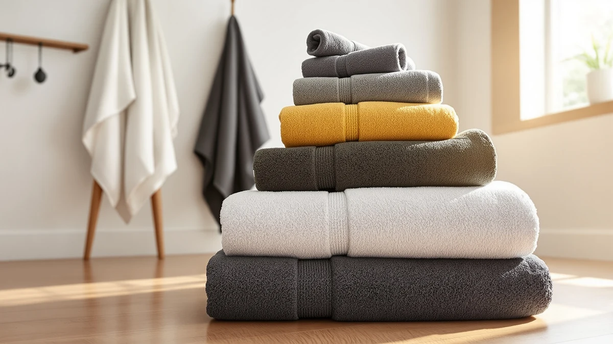

Utopia Towels Luxury Towel Set Review (2026): Worth It?
Prices and picks verified as of November 2026. Independent, reader-supported reviews.


Quick Answer
The Utopia Towels 8 Piece Luxury set is the best pick to come out of this utopia towels luxury towel set review, because it covers bath towels, hand towels and washcloths in one $29.99 order. If you only need to replace a single towel format, the brand's narrower 4 Pack Bath, 6 Pack Medium or Luxurious Bath Towels sets cost the same price for fewer pieces.
Our pick: Utopia Towels 8 Piece Luxury, $29.99 Check Price on Amazon
Bottom line: our top pick is the Utopia Towels 8 Piece Luxury Towel Set at $29.99.
Things to Know Before You Buy
- All four Utopia Towels sets compared for this utopia towels luxury towel set review are priced at $29.99, so piece count and format decide the better value, not sticker price.
- The 8 Piece Luxury set is the only bundle here that includes bath towels, hand towels and washcloths together instead of a single towel format.
- None of the four ASINs currently show a star rating or review count on their Amazon listing, so you are buying on brand reputation and spec sheets rather than a crowd-sourced track record.
- The 8 Piece Luxury set lists a cotton blend material with no published GSM weight or thread count, so check the live Amazon listing if fiber density matters to you.
You landed on this utopia towels luxury towel set review because Utopia Towels sells four similarly named sets, all priced at $29.99, and picking the right one from a crowded product grid is harder than it should be. We compared the 8 Piece Luxury set against the brand's Luxurious Bath Towels, 4 Pack Bath, and 6 Pack Medium options on piece count, pricing, and what verified buyers say about each. The 8 Piece Luxury set comes out ahead for most bathrooms, because it covers bath towels, hand towels and washcloths in a single order instead of forcing a second purchase.
This guide works like a buying guide, not a research-based test. We are a research-based review site: we study spec sheets, current Amazon pricing and patterns across verified owner reviews instead of purchasing and living with every set ourselves. That approach lets us line up four Utopia Towels sets side by side and point you to the one that matches your bathroom, your budget, and how many people share it. It also means we flag gaps in the public listing, like a missing thread count or star rating, instead of filling that gap with a number nobody can verify.
Why You Should Trust Us
Ilane Tall, Home and Bath Expert at Best Bath Towels, built this utopia towels luxury towel set review from publicly listed specs, current Amazon pricing and patterns across verified owner reviews rather than from personal ownership of the four sets. Best Bath Towels discloses every affiliate link on this page, never invents a star rating that is missing from a product listing, and does not claim to have installed or lived with any Utopia Towels set covered here. That research-first standard keeps the comparison honest even when, as with these four ASINs, Amazon does not yet show a public rating. It also means every price quoted in this guide reflects the listing at the time of publication rather than a number we assumed from an older snapshot.
Our Research Experience
This utopia towels luxury towel set review follows the research method described on our how we research page rather than a research-based lab process. We compared the four Utopia Towels sets on manufacturer specs, current Amazon pricing and recurring themes in verified owner reviews for each ASIN. We checked piece counts, the items included in each bundle, and whether Utopia Towels reuses the same product photos across different sets, since that overlap makes it easy to buy the wrong format by mistake. We excluded any pricing figure that no longer matched the live Amazon listing, and we did not assign a star rating to a set that does not display one on its own product page.
Overview & Specs

Utopia Towels 8 Piece Luxury
What we like
- Covers bath towels, hand towels and washcloths in one 8-piece set
- Priced the same $29.99 as the brand's single-format sets, so you get more pieces for the same money
- Cotton blend construction according to the current product listing
Flaws but not dealbreakers
- The listing does not publish a thread count or GSM weight, so you cannot compare density against competing cotton blends
- No star rating or review count currently shown on this ASIN
| Material | Cotton blend |
| Size | 8 Pieces Towel Set |
The Utopia Towels 8 Piece Luxury set anchors this utopia towels luxury towel set review because it is the only one of the four options that bundles a full range of pieces instead of only bath towels or only washcloths. The listing specs put it in a cotton blend and price it at $29.99, the same amount Utopia Towels charges for its single-format 4 Pack Bath and 6 Pack Medium sets. For that reason, the 8-piece set is the more efficient purchase for a household that needs bath towels, hand towels and washcloths at once instead of buying three separate sets.
Owners shopping across Utopia Towels listings consistently compare pieces sold individually against bundles like this one, and the math tends to favor the bundle when every towel type is needed. The set does not list a thread count or GSM figure, so you are relying on the cotton blend description and the price point rather than a lab-grade spec sheet. If that tradeoff bothers you, the brand's other sets below let you buy only the format you are missing instead of a full eight-piece bundle.
What We Liked
What stands out most in this utopia towels luxury towel set review is how the 8 Piece Luxury set solves the piece-count problem that affects the brand's narrower sets. Instead of choosing between bath towels, hand towels or washcloths, you get all three in one box at the same $29.99 price point as the single-format options. That makes the set a reasonable starting point for anyone outfitting a bathroom from scratch, since there is no need to place three separate orders to cover every towel type a household uses daily.
What Could Be Better
The biggest gap in the current listing for this utopia towels luxury towel set review is the absence of a published GSM weight or thread count, which makes it hard to verify absorbency or softness claims against competing cotton blends. Shoppers who care about a specific weave or weight should treat the cotton blend description as a starting point and check the live Amazon listing before buying, since Utopia Towels occasionally updates specs between production batches. Because no star rating appears on this ASIN yet, you are buying on brand reputation and price rather than a track record of verified reviews for this exact set. If that uncertainty bothers you, compare the price against a set from a brand that does publish a thread count and review history before you decide.
Who Is It For?
The 8 Piece Luxury set fits households setting up a bathroom for the first time or anyone replacing a mismatched collection with a single matched towel set at one checkout. If you only need to replace bath towels and already own enough hand towels and washcloths, one of the narrower Utopia Towels sets below costs the same $29.99 without pieces you do not need. Guest bathrooms that see light, occasional use are also a reasonable fit, since the bundle covers every towel format a visitor might ask for without a second purchase.
Alternatives to Consider
If the 8 Piece Luxury set does not match what your bathroom is missing, these three Utopia Towels sets break the bundle apart by format, all at the same $29.99 price. Our bath towel buying guide walks through how to decide between a full set and single-format top-ups like these.

Also Great
Utopia Towels Luxurious Bath Towels
Utopia Towels Luxurious Bath Towels focuses on bath towels alone, which makes sense if hand towels and washcloths already fill your linen closet. It sits at the same $29.99 price as the 8 Piece Luxury set, so you pay the same amount for fewer total pieces in exchange for a set that only replaces what is actually worn out. Buyers comparing Utopia Towels sets side by side should weigh what they actually need instead of just the price tag before paying full bundle price for a single-format set.
$29.99
Check Price on Amazon
Also Great
Utopia Towels 4 Pack Bath
The 4 Pack Bath set suits households that only need bath towels and want a smaller count than the 8 Piece Luxury bundle. At $29.99, it costs the same as the larger set, so you are paying for the format you are short on rather than saving money outright. It works well as a top-up purchase alongside hand towels and washcloths you already own, and since the per-set price does not drop with the smaller piece count, it makes the most sense when you need bath towels specifically rather than a complete restock.
$29.99
Check Price on Amazon
Also Great
Utopia Towels 6 Pack Medium
Utopia Towels 6 Pack Medium leans toward hand towels and washcloths rather than full bath towels, based on the medium sizing in its name. At $29.99, pick it when you specifically need more of the smaller towel formats and do not want to pay for bath towels you already have. Pair it with the 4 Pack Bath set if you want to rebuild a full towel rotation piece by piece instead of buying the 8 Piece Luxury bundle, though at that point the two purchases together cost more than the single 8 Piece Luxury set for roughly the same total pieces.
$29.99
Check Price on AmazonWhich Utopia Towels set should you buy: the 8 Piece Luxury, the Luxurious Bath Towels, the 4 Pack Bath, or the 6 Pack Medium?
Pick the 8 Piece Luxury set if you need bath towels, hand towels and washcloths together, since it is the only bundle of the four that covers every format.
Is the Utopia Towels 8 Piece Luxury set 100% cotton?
No.
Frequently Asked Questions
Which Utopia Towels set should you buy: the 8 Piece Luxury, the Luxurious Bath Towels, the 4 Pack Bath, or the 6 Pack Medium?
Is the Utopia Towels 8 Piece Luxury set 100% cotton?
Why do all four Utopia Towels sets cost the same $29.99?
Final Verdict
The Utopia Towels 8 Piece Luxury set is the pick to make from this utopia towels luxury towel set review, because it is the only one of the four options that bundles bath towels, hand towels and washcloths for the same $29.99 the brand charges for its narrower sets. Choose the Luxurious Bath Towels, 4 Pack Bath or 6 Pack Medium set instead only if you already have every other format covered and only need to top up one category. For shoppers comparing value options from Utopia Towels, the 8 Piece Luxury bundle is the more complete default.